EraseLoRA in action. Dataset-free object removal that excludes non-target foregrounds and reconstructs the occluded background from diverse subtypes, with no training data.
Object removal is not hole-filling. It must prevent the masked target from reappearing and reconstruct the occluded background with structural and contextual fidelity. Recent dataset-free methods redirect self-attention away from the mask, but fail in two ways rooted in the same cause: the absence of explicit background-aware reasoning.
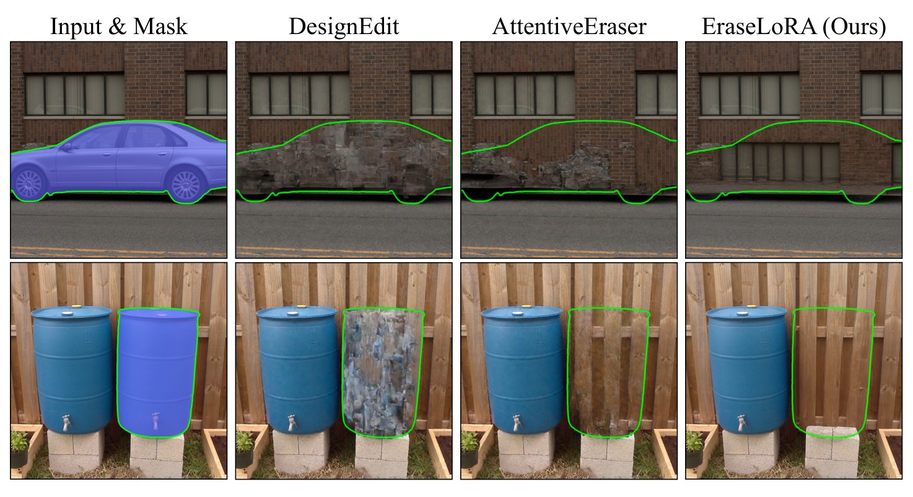
Artifacts from attention manipulation. Recent dataset-free methods directly modify attention inside the mask without identifying background cues, leaving residual structure and blurred, misaligned reconstructions.
Treating the masked region as the sole foreground, prior methods misinterpret non-target objects outside the mask as background and regenerate them, producing unwanted content.
Applying uniform attention constraints without distinguishing diverse background subtypes blurs textures and misaligns structure at the boundaries between disparate regions.
Prior dataset-free removal performs attention surgery, blocking the diffusion model's self-attention inside the mask so it ignores the target. But this has no notion of what the background actually is: it regenerates non-target objects it mistakes for background, and blurs across distinct background subtypes. EraseLoRA replaces attention surgery with explicit background-aware reasoning: a multimodal LLM separates target, non-target foregrounds, and clean background, and test-time optimization aggregates background subtypes as complementary pieces, all with no training data.
Object removal must prevent the masked target from reappearing and reconstruct the occluded background with structural and contextual fidelity, rather than merely filling a hole plausibly. Recent dataset-free approaches manipulate the diffusion model's internal self-attention to prevent it from referencing the masked region, yet they fail in two critical ways: (i) they treat the masked region as the sole foreground, misinterpreting non-target objects as background and regenerating them, and (ii) they apply uniform attention constraints without distinguishing diverse background subtypes, leading to textural blurring and structural misalignment. Both failures stem from the absence of explicit background-aware reasoning.
We propose EraseLoRA, a dataset-free framework that replaces attention surgery with background-aware reasoning and test-time adaptation. The first stage, Background-aware Foreground Exclusion (BFE), leverages a multimodal large-language model to separate target foreground, non-target foregrounds, and clean background from a single image-mask pair. The second stage, Background-aware Reconstruction with Subtype Aggregation (BRSA), performs test-time optimization that treats inferred background subtypes as complementary pieces, enforcing their consistent integration through reconstruction and alignment objectives without explicit attention intervention.
As a model-agnostic plug-in applicable to diverse diffusion backbones, EraseLoRA reconstructs backgrounds at least 23% more faithful to the original scene than previous dataset-free methods while nearly halving unwanted foreground re-generation, and surpasses all dataset-driven approaches in both aspects despite requiring no training data.
We identify that dataset-free object removal fails for lack of explicit background reasoning, and replace fragile attention surgery with a reasoning-driven, test-time framework that needs no training data.
An MLLM separates target foreground, non-target foregrounds, and clean background from a single image-mask pair, so non-target objects are excluded rather than regenerated.
Test-time optimization treats inferred background subtypes as complementary pieces, integrating them through reconstruction and alignment objectives, without any explicit attention intervention.
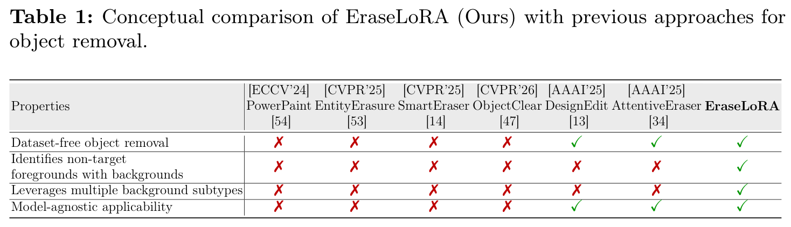
Conceptual comparison. EraseLoRA is the only dataset-free method that identifies non-target foregrounds, leverages multiple background subtypes, and stays model-agnostic.
EraseLoRA runs in two stages: first reason about the scene to decide what is foreground vs. background, then reconstruct the masked region by aggregating background subtypes at test time.
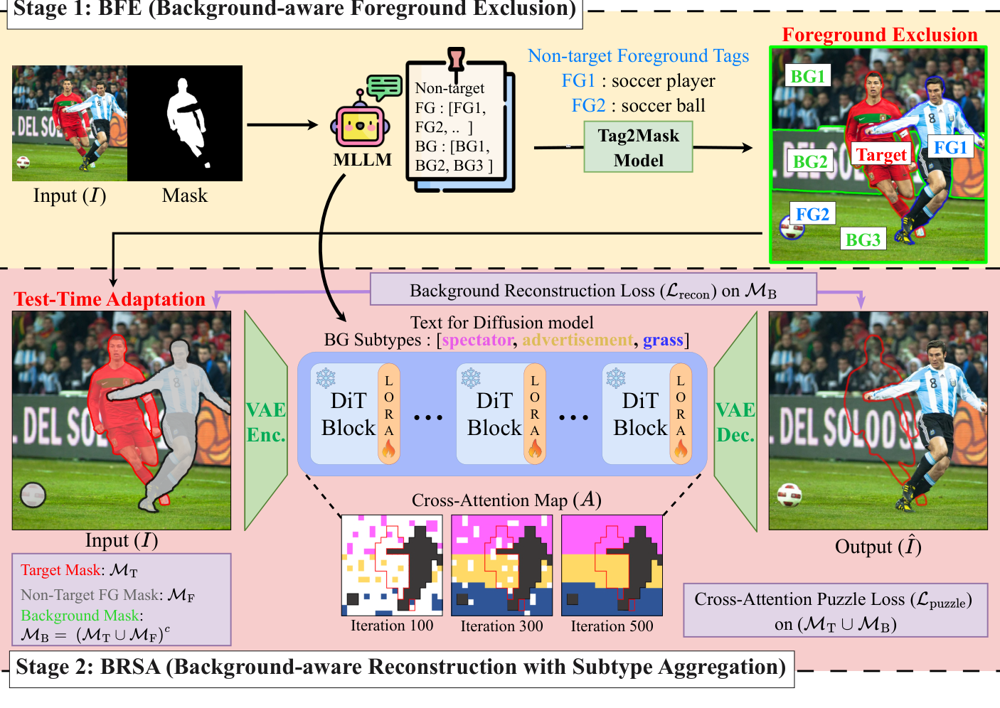
Overview of EraseLoRA. Stage 1 (BFE) separates target foreground, non-target foregrounds, and background from a single image-mask pair using an MLLM. Stage 2 (BRSA) performs test-time optimization that aggregates inferred background subtypes as complementary pieces.
From a single image-mask pair, a multimodal large-language model partitions the scene into the target foreground to remove, non-target foregrounds that must be preserved, and the clean background available for reconstruction. By explicitly excluding non-target foregrounds, BFE stops the diffusion model from mistaking other objects for background and regenerating them.
Rather than constraining attention uniformly, BRSA treats the inferred background subtypes as complementary pieces and performs test-time optimization that enforces their consistent integration through reconstruction and alignment objectives. This preserves local detail within each subtype and coherent structure across subtype boundaries, with no explicit attention intervention.
EraseLoRA requires no training data and adds no auxiliary networks to the backbone. It plugs into diverse diffusion backbones as a test-time procedure, making background-aware removal broadly applicable.
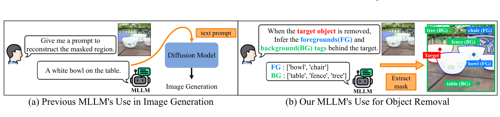
Background-aware reasoning power of the MLLM. Unlike prior work that uses MLLMs to reason over the visible scene for generation, EraseLoRA prompts the MLLM to infer which foreground and background tags lie behind the target, then extracts their masks.
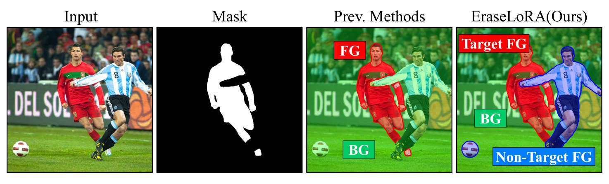
Identification of non-target foregrounds. Prior methods treat the entire unmasked region as background, causing regeneration of non-target objects. EraseLoRA separates target foreground, non-target foregrounds, and clean background.
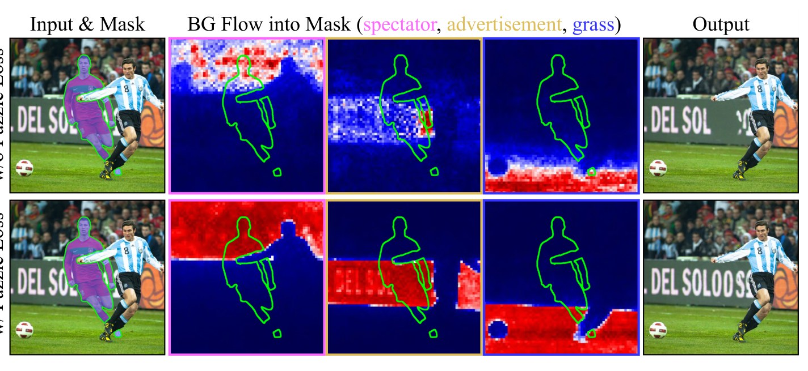
Effect of the background puzzle loss. Each background subtype flows into the mask as a complementary piece, and a reconstruction-and-alignment objective integrates them into a coherent background.
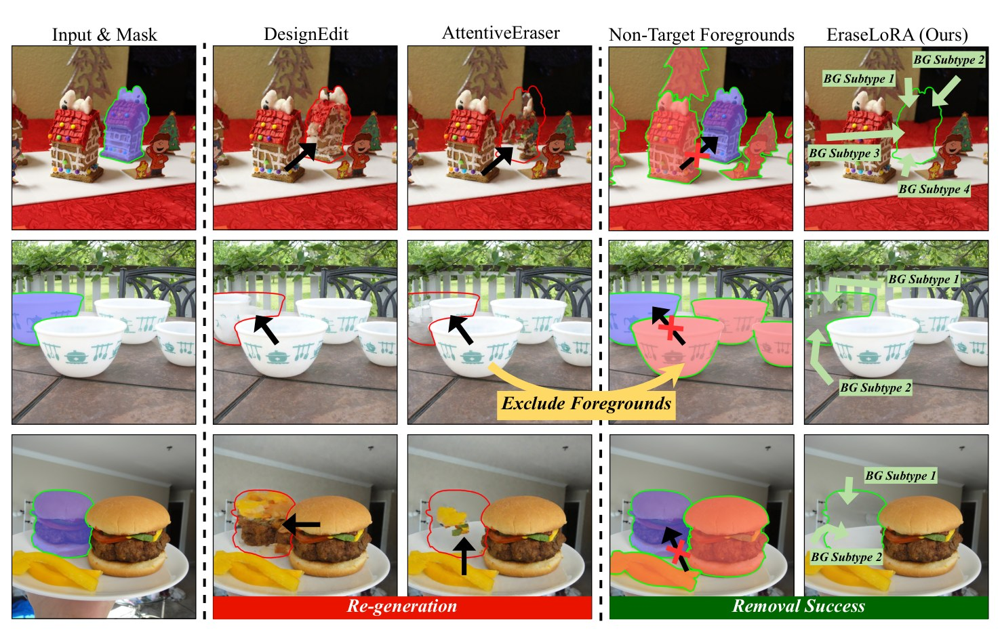
Faithful removal without regenerating non-target objects. Prior dataset-free methods treat only the masked region as foreground and regenerate non-target objects. EraseLoRA identifies and excludes non-target foregrounds and reconstructs the masked region from diverse background subtypes.
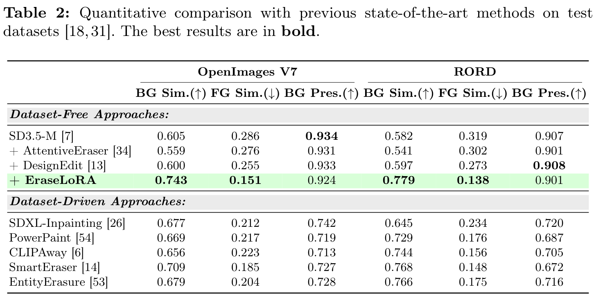
Quantitative comparison on OpenImages V7 and RORD. EraseLoRA leads all dataset-free methods on background similarity (BG Sim.) and foreground similarity (FG Sim.), and surpasses dataset-driven methods, with no training data. Higher BG Sim. and lower FG Sim. are better.
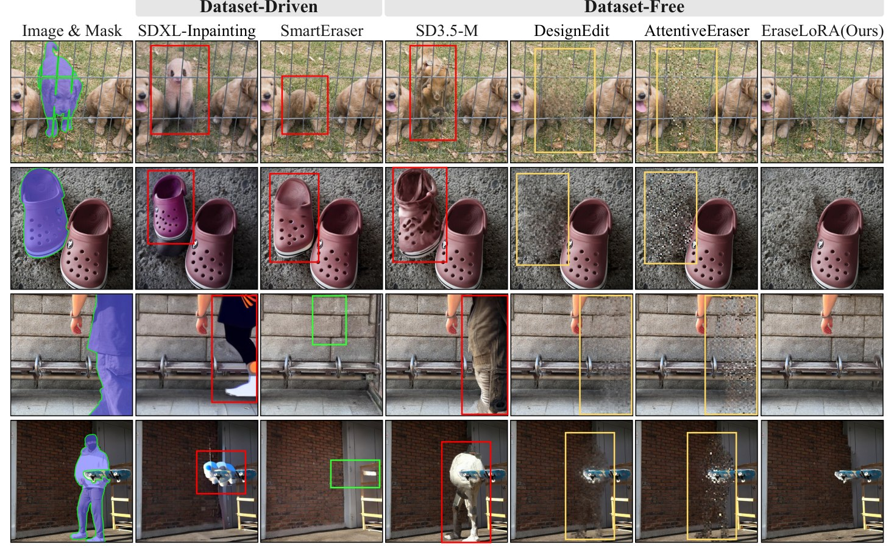
Qualitative comparison on OpenImages V7 and RORD. Without any paired data, EraseLoRA avoids unwanted background changes and non-target regeneration, matching or surpassing dataset-driven methods.
Across diffusion backbones, EraseLoRA reconstructs backgrounds at least 23% more faithful to the original scene than previous dataset-free methods, while nearly halving unwanted foreground re-generation. It surpasses all dataset-driven approaches on both axes, despite using no training data, no auxiliary networks, and no attention surgery.
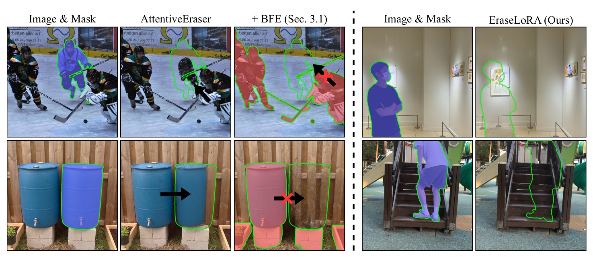
Foreground exclusion prevents non-target regeneration. Adding BFE to prior dataset-free methods suppresses regeneration of non-target objects, and EraseLoRA stays robust in occlusion cases.
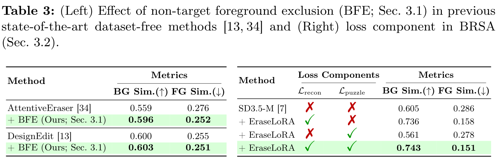
Each component helps. (Left) Adding BFE to prior methods improves both background and foreground similarity. (Right) Combining the reconstruction and puzzle losses in BRSA yields the most faithful reconstruction.
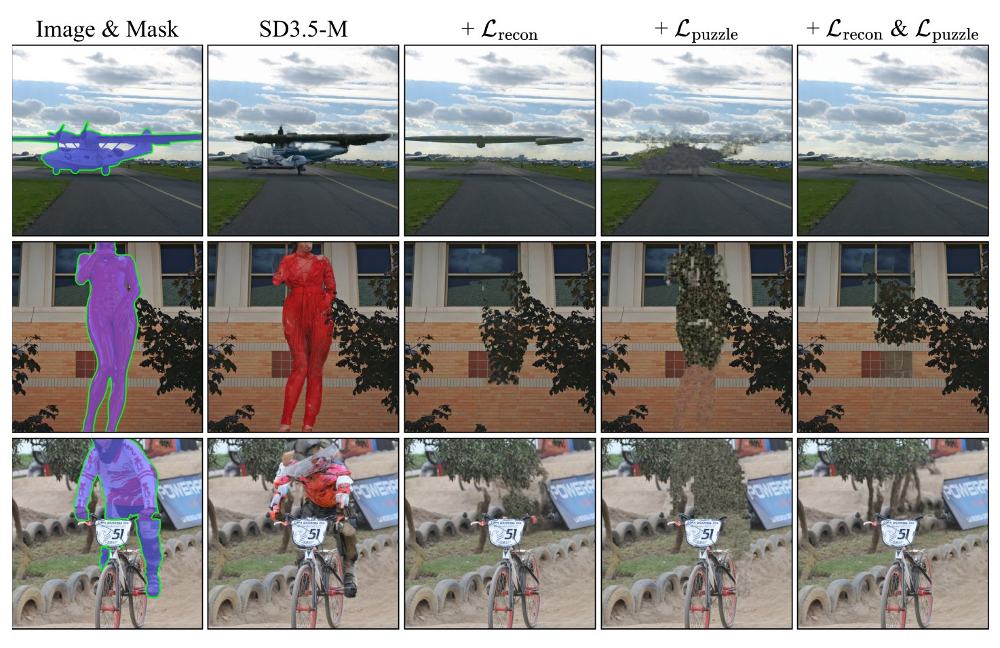
Reconstruction preserves structure; the puzzle loss completes the mask. Using both objectives together yields a coherent background reconstruction inside the masked region.
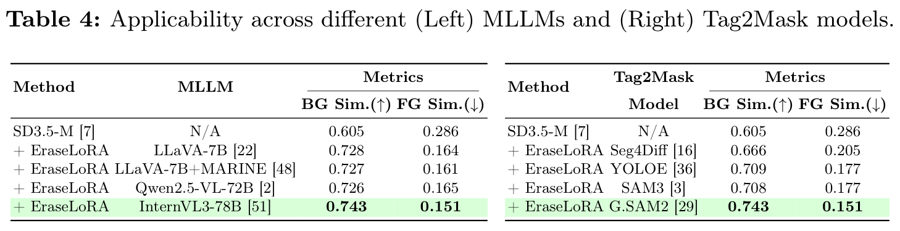
Robust to component choices. EraseLoRA remains effective across a range of MLLMs and Tag2Mask segmentation models, confirming it is not tied to a specific backbone.
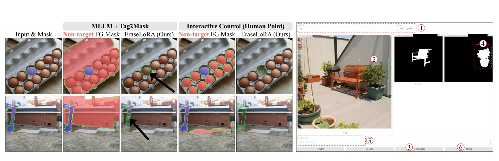
User-guided foreground exclusion. An interactive interface lets users generate customized non-target foreground masks for BFE from manual points, giving fine control over what is preserved.
@inproceedings{jo2026eraselora,
title = {EraseLoRA: MLLM-Driven Foreground Exclusion and Background Subtype Aggregation for Dataset-Free Object Removal},
author = {Jo, Sanghyun and Lee, Donghwan and Jung, Eunji and Oh, Seong Je and Kim, Kyungsu},
booktitle = {European Conference on Computer Vision (ECCV)},
year = {2026}
}